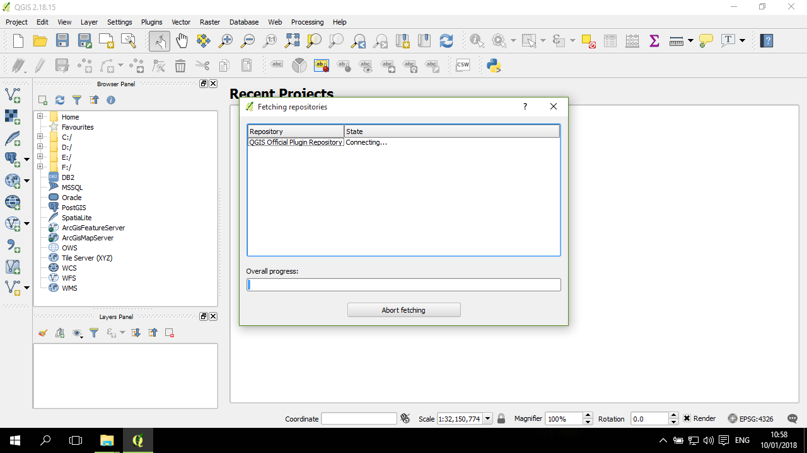

套件安裝 (plugins)
除了 官方QGIS 所自帶的各種常用工具之外，也可以透過各種套件(Plugins) 使用非官方、由社群(community) 所編寫的其他工具。 本教學將應用其中的 3個套件：
- Cartogram: 進階地圖繪製的變形地圖
- Flowmapper: 透過OD矩陣與起迄點位置，繪製流動網絡
- Dissolve with stats: 依照欄位進行資料合併，同時計算統計量的變化(加總、平均、取第一筆之類)
套件管理
在上方工具欄中，找到 Plugins --> Manage and Install Plugins...
點開後，會出現一個正在載入的視窗，就讓他跑一下：

然後會出現套件管理的視窗，其左邊有一欄是分頁(tab)，包括所有(All)、已安裝的套件(Installed)、未安裝(Not installed) 等；右邊最上面是搜尋套件的地方，可以輸入關鍵字：
在搜尋欄位，輸入 cartogram ，下方就會出現與 cartogram 相關的套件：
找到要安裝的套件(cartogram)，然後點右下角的安裝套件(Install plugin)，安裝完後，上方會出現一條藍色的通知說已安裝完成：